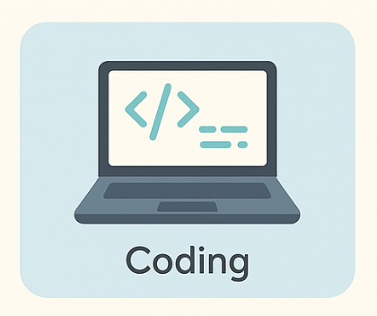
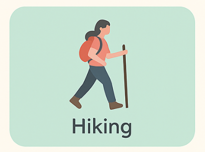
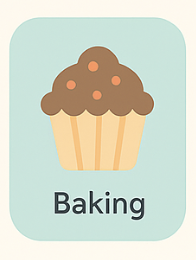
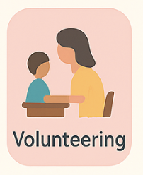

Hobbies & Interest
- Coding: Practices data structures/algorithms, solves LeetCode challenges, and contributes small fixes to open-source projects on GitHub.

- Reading: Follows tech blogs and CS books; summarizes key takeaways to apply in class projects.
- Mobile Apps: Prototypes Android utilities in Java/Kotlin, experiments with Jetpack Compose, and iterates from user feedback.
- Hiking: Weekend trail hikes; plans routes and logs metrics, great for focus, resilience, and teamwork.

- Photography: Shoots events and nature; edits in Lightroom and curates albums with clear storytelling.

- Painting: Creates digital and acrylic pieces; studies color theory that informs UI design choices.

- Baking: Enjoys precise, repeatable recipes; documents experiments and improvements,like versioning for food.

- Volunteering: Mentors middle/high-school students in Python/Java; organizes beginner workshops for Women in Computing.
